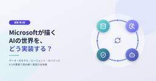

APC 技術ブログ
https://techblog.ap-com.co.jp/
株式会社エーピーコミュニケーションズの技術ブログです。
フィード

【Microsoft Ignite 2026 現地レポート Day2】大雨で展示会場が閉鎖！？ ガバナンス漬けの1日と、Chase Center の Celebration
APC 技術ブログ
こんにちは。クラウド事業部の宇野です。 サンフランシスコで開催中の Microsoft Ignite 2026 に現地参加しています。 本記事は Day2（11月18日） のレポートです。 Day2 は、朝から大雨。展示会場の閉鎖という予想外の出来事もありましたが、セッションは「AIエージェントのガバナンス」を中心に、ハンズオンラボまでしっかり受けることができました。夜は Chase Center での参加者向けパーティー「Microsoft Ignite Celebration」です。今回も、配信では見えない現地の様子を中心にお届けします。 この記事でわかること 大雨の Day2 の流れと、…
2日前

【Microsoft Ignite 2026 現地レポート Day1】配信では見えない現地のリアル。朝の街、スタジオのようなキーノート、空港並みの検査、ノベルティまで
APC 技術ブログ
こんにちは。クラウド事業部の宇野です。 サンフランシスコで開催中の Microsoft Ignite 2026 に現地参加しています。 本記事は、本編初日となる Day1（11月17日） のレポートです。 オープニングキーノートは、オンライン配信やたくさんのブログ・ニュースですでに紹介されています。そこで本記事では、発表内容は要点だけに絞り、現地に行かないと見えてこない部分（会場の外の様子、移動のリアル、ノベルティ事情など）を中心にお届けします。 この記事でわかること Day1 の動き方と、予定どおりにいかなかったところ キーノート前にサンフランシスコの街で見かけた光景 現地で見たキーノートの…
3日前

Microsoft Ignite 2026 現地レポート Day0
APC 技術ブログ
こんにちは。クラウド事業部の宇野です。 2026年11月17日（火）〜20日（金）にサンフランシスコで開催される Microsoft Ignite 2026 に現地参加しています。 本記事では、本編開始前日の Day0（11月16日） として、移動〜バッジ受け取り〜前日セッションまでの流れをレポートします。 この記事でわかること 日本からサンフランシスコへの移動の流れ（ANA NH008） Ignite前日（Day0）のスケジュール 「Ignite 101」で紹介された、現地参加を最大限に活かすポイント パートナー向けに紹介された注目セッション Microsoft Ignite 2026 の概…
4日前

Microsoftが描くAIの世界を、どう実装する？
APC 技術ブログ
はじめに 前提：AIを「単体の道具」ではなく「組織（チーム）」として捉える 全体像を捉える3つの役割（レイヤー） 現場の総合窓口と各分野の職人（Microsoft Copilot / Microsoft Copilot Studio）： 「いつものあの件」が通じる背景理解（Microsoft IQ / Microsoft Graph）： 育成環境と管理部門（Microsoft Foundry / Microsoft Agent 365）： 1. 企業実装の鍵となる「4つの要素」の組み合わせ方 ① データ基盤（Data）：AIの「記憶」と「教科書」を整える ② AIモデルと使い分け（AI）：適材…
5日前

【Zscaler】OneAPI入門#2 URLホワイトリスト棚卸し編、追加も削除もAPIで自動化しよう
APC 技術ブログ
ZIAのURLホワイトリスト、登録したまま放置されていませんか？カスタムURLカテゴリのURLは、増える一方で見直す機会が少なく、不要なURLが残り続けがちです。本記事では、OneAPIとPythonを使って、カテゴリに登録されている既存URLをCSVで出力し、追加・削除したいURLをまとめて反映する方法を紹介します。
5日前

【AWS】リソースごとのARN形式がどこに情報があるのかいつも分からなくなるので、公式ドキュメントを把握しておきたい (+Route53プロファイル関連付けに設定したタグが分かりづらいからARN把握ついでに確認する)
APC 技術ブログ
目次 目次 はじめに 結論 活用例 やってみた 1. 検証用リソースの作成 2. AWSマネジメントコンソールでタグ付けを確認 (できない) 3. ARN形式を特定 4. AWS CLIでタグを確認 おわりに お知らせ はじめに こんにちは、クラウド事業部の坂口です。 普段は必要以上に意識しないけれど、ふとした拍子に気になるもの。もちろんそう、AWS Step Functionsのペイロードサイズ制限(*)とAWSのリソースごとのARN形式ですね。 (*)サイズの制限は256KBです 正しいARN形式が気になるたびに検索を重ねる時間をそろそろ惜しく感じてきたので、備忘録も兼ねてちゃんと記載して…
6日前

【AWS初心者向け】IAMロールの認証の仕組み
APC 技術ブログ
本記事は、社内AWS研修をきっかけにIAMロールの仕組みについて調べてまとめたレポートです。 はじめに IAMロールと認証の仕組み IAMロールのポリシーとは STSとは IMDSとは EC2からS3にアクセスする流れ ① IAMロールをEC2にアタッチする仕組み ② AWSがSTSを使って一時認証情報を用意する ③ EC2がIMDSから認証情報を取得する ④ 一時認証情報を使ってS3へアクセスする ⑤ AWSが認証と認可を確認する ⑥ 認証が自動更新される おわりに はじめに こんにちは、 2026年度に新卒で入社いたしました、クラウド事業部の吉田愛です。 研修の一環で、AWSについてハンズ…
8日前
【Microsoft Ignite 2026】現地参加前に押さえておきたい注目ポイントと視聴予定セッション
APC 技術ブログ
こんにちは。クラウド事業部の宇野です。 来週 11月17日〜20日にサンフランシスコで開催される Microsoft Ignite 2026 に、現地参加してきます。 本記事では、参加前の予習として「Ignite 2026 の概要」「今年の注目ポイント」「私が視聴予定のセッション」をまとめました。現地に行けない方も、無料のデジタルパスでオンライン視聴できますので、セッション選びの参考になればうれしいです。 Microsoft Ignite 2026 の概要 私の参加スケジュール 今年の注目ポイント：Agent 365 の進化 視聴予定のセッション 全体の方向性をつかむ ガバナンス・管理 セキュ…
8日前
Google Cloud主催【Agentic AI Summit '26 Fall】参加レポート ～ AIは「質問に答える」から「仕事を代行する」へ～
APC 技術ブログ
このブログではGoogle Cloud主催の"Agentic AI Summit 2026"の参加レポートとして、概要・気づき・調べたこと・所感についてまとめます。
9日前
AIと一緒に資格勉強をして、1か月でGitHub資格5つに合格した方法
APC 技術ブログ
こんにちは。ACS事業部の井田です。 私は資格勉強に苦手意識がありましたが、AIを活用して学習ノートや練習問題を作り、この10月にGitHubの資格を5つ取得できました。 AIを活用した勉強方法はすでに多くの記事で紹介されていますが、今回、自分で取り組む中で気づきや工夫した点がありましたので、それらも含めて紹介します。 資格勉強に苦手意識のある方や、AIを活用した勉強方法に興味がある方の参考になれば幸いです。 今回取得したGitHub資格 公式情報を起点に学習ノートを作る AIと一緒に練習問題を解く ブラウザ操作もAIと一緒に学べる AIを活用することで能動的で効果の高い学習ができた まとめ …
12日前
GH-900 GitHub Foundations を受験してきました
APC 技術ブログ
はじめに こんにちは。IT インフラ自動化支援業務を行っている横地です。 先日、GitHub に関する基礎的な知識を問う試験である GH-900 GitHub Foundations を受けて合格しました。 本記事では、受験のきっかけや、勉強方法、オンライン試験当日の様子、ふりかえりをまとめます。 きっかけ 普段 GitHub は利用者として多少使っている状態でした。自分の知識はどのくらいなんだろう？基礎ってどのレベルなんだろう？という意味で、以前からうっすら気になっていた試験でした。 しかし、公式コンテンツも充実していることは認識していたのですが、試験自体が苦手でなかなかきっかけが掴めずにい…
12日前
【Backstage】 kubernetes pluginのセキュリティが強化されました
APC 技術ブログ
はじめに 皆さんこんにちは。エーピーコミュニケーションズ ACS事業部 亀崎です。 本ブログでも何度も取り上げてきている Backstage には Kubernetes用のPluginも存在します。 techblog.ap-com.co.jp techblog.ap-com.co.jp 今回はそのPluginでセキュリティが強化された話です。 Kubernetes plugin クラスター情報の指定 BackstageのKubernetes pluginでクラスタ情報を登録する方法（設定）を clusterLocatorMethodsといいます。代表的な指定方法には以下のようなものがあります。…
15日前
【Wiz】Scan for Goodとは？無料トライアルとの違いと日本向け支援内容を解説
APC 技術ブログ
Wizの日本向け無償プログラム「Scan for Good」とは？公開サイトやAPIの重大なリスクをAIと専門家が調査する支援内容や、通常の無料トライアルとの違い、対象企業・申込条件をわかりやすく解説します。
15日前
【NetBox連載 第2弾】NetBox Enterpriseとは？自社環境で使える有償版を解説
APC 技術ブログ
本シリーズについて: NetBoxを検討する方向けの連載の第2弾です。第1弾「NetBoxとは？ネットワーク管理の「Source of Truth」を解説」ではNetBoxの全体像を紹介しました。本記事では有償版「NetBox Enterprise」を掘り下げます。今後、SaaS版「NetBox Cloud」、自動収集機能（Discovery / Assurance）の解説を順次公開予定です。 1. NetBox Enterpriseの位置づけ 2. Community版との違い 3. Enterprise版を選ぶ8つの理由 理由1: 台帳を「作る」「守る」を自動化できる（Discovery …
16日前
【Zscaler】OneAPI入門#1 自動化の第一歩、アクセストークンを取得しよう
APC 技術ブログ
ZscalerのAPIを使ってみたいけれど、何から始めればいいか分からない方へ。OneAPIの基本となるアクセストークンの取得方法を、PythonとPostmanで解説します。
18日前
実践で使えるFabric Analytics Engineer Associate（DP-600）合格体験記
APC 技術ブログ
データエンジニアリング初心者がMicrosoft Fabric認定資格「DP-600」に合格した学習プロセスを解説。試用版を用いた実践ハンズオンを中心に、おすすめ書籍やMS Learnの活用法、試験本番の勘所まで客観的に共有します。
18日前
Datadog private action runnerにAKSアラートの一次対応をしてもらう
APC 技術ブログ
こんにちは、クラウド事業部の山中です。 日々アラート対応をしていると、とりあえずクラスタにkubectlを実行して今のpodの状態を確認したくなります。 今回はDatadog Operatorを使ってAKSにprivate action runnerをデプロイし、 アラート発生時にpodの情報を自動的に取得してもらおうと思います。 private action runnerのセットアップ Azure側の準備 まずはAzure側のリソースを作成します。 検証用に以下のterraformコードを書きました。 terraformコード # provider terraform { required_…
19日前
Foundryの Copilot harness を試してみた ― Application Insights で見えた仕組みと、A2A での挙動の違い
APC 技術ブログ
目次 目次 はじめに FoundryのCopilot harnessとは 何のためのものか GitHub Copilotとの関係 主な機能 提供状況と制約 作り方 Application Insightsで見えた仕組み 1回の実行は、入れ子のスパンで記録される サブエージェントが動くこともある Foundry側の記録は、別名になる レート制限のとき そのほか見えたもの A2Aでの比較 比較の条件 成功時は、ほぼ同じ形で返る エラー時は、返り方が変わる A2Aの仕様では、どう決まっているのか ハーネスが error を返さない理由 監視で気をつけたいこと 結びに ACS 事業部のご紹介 はじめに…
20日前
【OCI】Oracle Cloud Infrastructure Certified Architect Associate合格記
APC 技術ブログ
はじめに こんにちは、クラウド事業部の藤江です。 今回は、Oracle Cloud Infrastructure（OCI）の認定資格である「Oracle Cloud Infrastructure Certified Architect Associate」に合格したので、学習方法や受験した感想について紹介します。 今回の受験は、以前取得した資格の更新が目的です。 受験した試験 今回受験した試験は以下のとおりです。 項目 内容 試験名 Oracle Cloud Infrastructure Certified Architect Associate 試験番号 1Z0-1072-26-JPN 試験…
20日前
【AWS】AWS Certified Generative AI Developer - Professional (AIP-C01) に合格したので所感を綴る
APC 技術ブログ
目次 目次 はじめに 関連記事 試験について 点数 勉強期間 教材 試験の感想 お知らせ はじめに こんにちは、クラウド事業部の坂口です。 先日、AWS Certified Generative AI Developer - Professional (AIP-C01) を受験して、ありがたいことに無事合格をいたしました。 いつもの通り、万全とは限りなく程遠い状態で臨むこととなりましたが、合格したので結果オーライ。受けてみた感想などをつらつらと書いていこうと思います。 関連記事 ※ほぼ同じタイミングで再認定のために受験したDOPの記事 ※本記事ではこちらの記事の内容がそこそこ出てきます tec…
21日前
【AWS】AWS Certified DevOps Engineer - Professional (DOP-C02) を再認定 (更新) したので所感を綴る
APC 技術ブログ
目次 目次 はじめに 関連記事 試験について 点数 勉強期間 教材 試験の感想 お知らせ はじめに こんにちは、クラウド事業部の坂口です。 先日、AWS Certified DevOps Engineer - Professional (DOP-C02) を再認定のために受験し、無事合格してきました。 いつの間にか有効期限の3年が迫っており、失効した場合の影響が大きすぎるため重い頭と腰を上げました。 ついでに、社内的な都合ではありますが、10月中に受験しておきたかったという都合もあります。 今回は再認定のための受験ということもあり、受けてみた感想などをそれとなく書いていこうと思います。 関連記…
21日前
Chapter 8｜第90回 これからのZscalerエンジニアに求められるものは何か？
APC 技術ブログ
こんにちは、エーピーコミュニケーションズ 0-WANの山根です。 90回の連載をここまで読み進めると、Zscalerには多くの製品名や機能があることが分かります。 では、Zscalerエンジニアに必要なのは、それらの設定項目をすべて暗記することでしょうか。 もちろん製品知識は必要です。 しかし、実務では「この画面で何を設定するか」より先に、 なぜこの通信になるのか。なぜこの制御が必要なのか。どこに原因候補があるのか。 を考える場面が数多くあります。 最終回では、90本で学んだ内容を「これから伸ばしていく力」として整理します。 まず結論。「製品を知る力」より一段上に「アーキテクチャを考える力」が…
21日前
Chapter 8｜第89回 Zscalerの製品が増えても迷わないための整理方法
APC 技術ブログ
こんにちは、エーピーコミュニケーションズ 0-WANの山根です。 Zscalerを学び始めたときは、ZIAとZPAを覚えれば全体像が見えやすかったかもしれません。 ところが現在は、ZDX、Zero Trust Branch、Zero Trust Browser、Zero Trust Cloud、データセキュリティ、AIセキュリティなど、扱う領域が広がっています。 製品名を一つずつ暗記しようとすると、 「これはZIAなのか、別製品なのか」 「この機能は誰を守るのか」 「新しい名前が出るたびに全体像が分からなくなる」 という状態になりやすくなります。 そこで最終回の一つ前では、製品名ではなく目的と…
21日前
Chapter 8｜第88回 Zscalerで「ユーザー」以外を守る世界とは？
APC 技術ブログ
こんにちは、エーピーコミュニケーションズ 0-WANの山根です。 ここまでの連載では、多くの場面で「ユーザーがアプリケーションへアクセスする」流れを中心に見てきました。 しかし企業の通信は、人が操作するPCからだけ発生するわけではありません。 クラウド上のWebサーバーが外部APIへ接続する。 アプリケーションサーバー同士が通信する。 AWSとAzureのワークロードがデータをやり取りする。 データセンターのシステムがクラウドサービスへ接続する。 こうしたサーバーやワークロード同士の通信にもゼロトラストを広げられます。 まず結論。ゼロトラストの対象は「人」だけではない 一言でいうと、 Zsca…
21日前
Chapter 8｜第87回 AI時代に情報漏えい対策はどう変わる？
APC 技術ブログ
こんにちは、エーピーコミュニケーションズ 0-WANの山根です。 生成AIを業務で使う場面が一気に増えました。 文章の要約、議事録作成、コード生成、調査、資料作成。 便利な一方で、利用者がプロンプトへ入力した情報は、従来のファイルアップロードとは違う形で外部サービスへ送られることがあります。 たとえば、顧客名、契約内容、ソースコード、個人情報を何気なくプロンプトへ貼り付けるケースです。 「危険だからAIを全部禁止する」という方法もありますが、それでは生産性向上の機会まで失います。 そこで重要になるのが、AI利用を見える化し、使い方を制御し、機密データだけを守るという考え方です。 まず結論。AI…
21日前
Chapter 8｜第86回 TerraformとInfrastructure as CodeはZscalerとどう関係する？
APC 技術ブログ
こんにちは、エーピーコミュニケーションズ 0-WANの山根です。 第85回では、APIを使うと人の操作をシステムから実行できるようになる、という話をしました。 では、さらに一歩進んで、 「現在の設定状態そのものをコードとして管理できないか？」 と考えると、Infrastructure as Code（IaC）の考え方につながります。 ネットワークやクラウド基盤では、サーバーやネットワークリソースをコードで定義し、レビューしてから反映する運用が広く使われています。 Zscalerでも、ポリシーやApplication Segmentなど一部の設定をTerraformから管理できます。 今回はTe…
21日前
Chapter 8｜第85回 APIを使うとZscaler運用はどう変わる？
APC 技術ブログ
こんにちは、エーピーコミュニケーションズ 0-WANの山根です。 Zscalerの運用では、管理画面を使って確認・変更する場面が多くあります。 ユーザーやアプリケーションの情報を確認する。 設定内容を一覧化する。 同じようなリソースを複数作る。 別システムの情報と突き合わせる。 件数が少なければ、人が画面を見ながら作業する方法でも十分です。 しかし対象が増え、同じ処理を繰り返し、他システムとの連携が必要になると、「人が毎回同じ操作をする」こと自体が運用負荷になります。 そこで使われるのがAPIです。 まず結論。APIは「管理画面の代わり」ではなくシステム同士をつなぐ入口 一言でいうと、 API…
21日前
Chapter 8｜第84回 Private Service Edgeはどんなときに考える？
APC 技術ブログ
こんにちは、エーピーコミュニケーションズ 0-WANの山根です。 Zscalerというと、「世界中に分散したZscaler Cloudへ通信を送る」イメージを持つ方が多いと思います。 実際、Public Service EdgeはZscalerの主要な提供形態です。 では、なぜPrivate Service Edgeという選択肢があるのでしょうか。 「プライベート」という名前から、Zscaler Cloudとは切り離された独立装置を想像するかもしれません。 しかし、そうではありません。 Private Service Edgeは、特定組織向けのService Edgeを自社サイトやクラウド環境…
21日前
Chapter 8｜第83回 Zero Trust Browserって何？ブラウザーから始めるゼロトラスト
APC 技術ブログ
こんにちは、エーピーコミュニケーションズ 0-WANの山根です。 会社支給PCなら、MDMやEDR、Client Connectorなどで端末全体を管理できます。 では、委託先や外部パートナーのPC、BYODのように、企業側が端末全体を管理できない場合はどうでしょうか。 「業務アプリケーションを使ってほしい。でも個人端末へ会社のエージェントを入れることは難しい」 こうした場面では、端末全体ではなくブラウザーを仕事のセキュリティ境界として使う考え方が有効です。 Zscalerでは、その選択肢をZero Trust Browserとして提供しています。 まず結論。ブラウザーの中で「アクセス」と「デ…
21日前
Chapter 8｜第82回 Zero Trust Branchって何？拠点ネットワークはどう変わる？
APC 技術ブログ
こんにちは、エーピーコミュニケーションズ 0-WANの山根です。 本社、支店、店舗、工場などの拠点ネットワークでは、これまで多くの役割を現地のネットワーク機器で担ってきました。 インターネット接続、拠点間通信、ファイアウォール、VPN、ルーティング、セグメント分割。 拠点が増えるほど、「つなぐためのネットワーク」と「守るためのセキュリティ」の両方が複雑になりやすくなります。 ではゼロトラストの考え方を拠点へ広げると、何が変わるのでしょうか。 Zscalerでは、その方向性をZero Trust Branchとして提供しています。 まず結論。Zero Trust Branchは「拠点を大きなネッ…
21日前